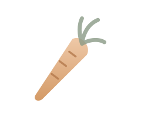
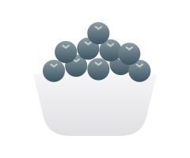
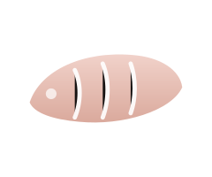
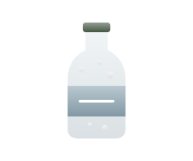
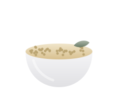
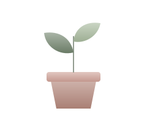
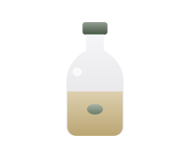

Hōlus Digest
Worth Digesting.
Science-backed reads, every source linked.
November 2026 edition
Colds and holiday drinks.
Two things people ask about every November: whether vitamin C keeps colds away, and what Canada’s newer alcohol guidance actually says.

Vitamin C and colds: what it can and can’t do
Regular vitamin C won’t stop most people catching a cold, and starting it once you’re sick doesn’t seem to help.
Read →
Vitamin C and colds: what it can and can’t do
Regular vitamin C won’t stop most people catching a cold, and starting it once you’re sick doesn’t seem to help.
When the first sniffles go around the office, the vitamin C aisle gets busy. Here is what the research actually shows.
What the evidence says
For most people, taking vitamin C regularly does not lower the chance of catching a cold. That is the conclusion of the U.S. National Institutes of Health’s Office of Dietary Supplements, based on the research it reviews.
In people who take it regularly, colds may be slightly shorter: about 8% shorter in adults and about 14% in children in the studies reviewed. Starting vitamin C after symptoms begin does not appear to help.
More is not better. The upper limit for adults is 2,000 mg a day; above that, vitamin C can cause stomach cramps, nausea and diarrhea.
On your plate
- Get vitamin C from food every day: oranges and other citrus, peppers, broccoli, kiwi, strawberries and tomatoes are all good sources.
- Frozen and canned vegetables and fruit count too, so you can keep it up all winter.
- If you take a supplement, stay under the 2,000 mg upper limit, counting what’s in any multivitamin.
Where this comes from
General information, not personal advice. Talk to a qualified professional before changing your diet or supplements.

Holiday drinks: what Canada’s alcohol guidance says
Less is better. Two drinks or fewer a week is the low-risk range, and that’s a ceiling, not a target.
Read →
Holiday drinks: what Canada’s alcohol guidance says
Less is better. Two drinks or fewer a week is the low-risk range, and that’s a ceiling, not a target.
Holiday parties are coming. Canada’s alcohol guidance changed a lot in 2023, and many people haven’t caught up.
What the evidence says
Canada’s Guidance on Alcohol and Health, from the Canadian Centre on Substance Use and Addiction (2023), describes risk as a continuum: the less you drink, the lower the risk.
Two standard drinks or fewer a week is low risk. Three to six is moderate risk, and seven or more is increasingly high risk. On any one occasion, the guidance suggests no more than two drinks.
This replaces the 2011 guidelines, which allowed much more (up to 10 drinks a week for women and 15 for men). The guidance is not saying to drink two a week; it says that if you drink, less is better. No amount is known to be safe during pregnancy.
On your plate
- Know what one drink is: a 341 mL (12 oz) bottle of 5% beer, a 142 mL (5 oz) glass of 12% wine, or 43 mL (1.5 oz) of 40% spirits.
- Alternate each drink with water or a non-alcoholic option, and eat while you drink.
- Bring a good alcohol-free option to parties. Sparkling water with fruit and herbs feels festive too.
Where this comes from
General information, not personal advice. Talk to a qualified professional before changing your diet or supplements.
October 2026 edition
Into the darker months.
Shorter days and a fall harvest: what Canadians should know about vitamin D, and why orange vegetables earn their place on the plate.

Vitamin D through a Canadian winter
Vitamin D is in very few foods. Health Canada suggests food sources or a daily 400 IU supplement.
Read →
Vitamin D through a Canadian winter
Vitamin D is in very few foods. Health Canada suggests food sources or a daily 400 IU supplement.
Days get shorter and we spend more time indoors. Here is what Health Canada suggests for vitamin D.
What the evidence says
Vitamin D helps your body use calcium to keep bones strong. It is found naturally in very few foods.
Health Canada’s advice for adults is to eat foods that contain vitamin D or take a daily supplement of 400 IU (10 µg). Everyone over 50 is advised to take a daily 400 IU supplement, because the need rises with age. Multivitamins may already contain it.
Health Canada says there is no added health benefit from taking more than the recommended amount, so bigger doses aren’t better without a reason from your health care provider.
On your plate
- Choose foods with vitamin D: milk and fortified plant-based beverages, fatty fish like salmon, trout and sardines, and eggs.
- Check the Nutrition Facts table on plant-based beverages to make sure they are fortified.
- If you already take a multivitamin, check its vitamin D before adding a separate supplement.
Where this comes from
General information, not personal advice. Talk to a qualified professional before changing your diet or supplements.

Squash, carrots and sweet potatoes: your vitamin A season
Orange vegetables are rich in beta-carotene, which your body turns into vitamin A as it needs it.
Read →
Squash, carrots and sweet potatoes: your vitamin A season
Orange vegetables are rich in beta-carotene, which your body turns into vitamin A as it needs it.
Fall markets in Ontario are full of squash, pumpkins and carrots. That colour is doing more than looking good.
What the evidence says
The orange colour comes from beta-carotene. Your body turns it into vitamin A, which supports vision in low light, your immune system and healthy skin.
The richest plant sources are orange and yellow vegetables (carrots, sweet potatoes, winter squash) and dark leafy greens like spinach. Vitamin A itself is also found in fish, eggs and dairy.
There is no upper limit for beta-carotene from food. High-dose beta-carotene supplements are a different story: they have been linked to a higher risk of lung cancer in people who smoke.
On your plate
- Roast squash, carrots and sweet potatoes together on one tray with a little oil.
- Blend cooked squash or pumpkin into soups, chili or oatmeal.
- Fill half your plate with vegetables and fruits, and let orange and dark green ones be regulars.
Where this comes from
General information, not personal advice. Talk to a qualified professional before changing your diet or supplements.
September 2026 edition
Back to routine.
New schedules, packed lunches and a reset on everyday eating: two practical places to start.
Packed lunches: build them like a plate
Half vegetables and fruits, a quarter whole grains, a quarter protein, plus water and an ice pack.
Read →
Packed lunches: build them like a plate
Half vegetables and fruits, a quarter whole grains, a quarter protein, plus water and an ice pack.
September means packing lunches again, for kids, for work, or both. A simple pattern takes the guesswork out.
What the evidence says
Canada’s Food Guide plate works for lunch boxes too: about half vegetables and fruits, a quarter whole grain foods and a quarter protein foods.
The Food Guide suggests planning lunches on the weekend, using dinner leftovers, and letting kids help pack. Kids who help are more likely to try new foods and bring less home uneaten.
Food safety matters in a lunch bag: Health Canada advises keeping cold food cold with an ice pack, or a frozen drink or yogurt that thaws by lunchtime.
On your plate
- Start with a vegetable and a fruit, then add a whole grain (whole grain wrap, crackers, brown rice) and a protein (eggs, beans, tuna, yogurt, leftover chicken).
- Pack a reusable water bottle.
- If lunches keep coming home full, ask when each item gets eaten and why some don’t. Their answer will tell you what to change.
Where this comes from
General information, not personal advice. Talk to a qualified professional before changing your diet or supplements.

More fibre, less discomfort: go slow
Most Canadians get about half the fibre they need. Add it a little at a time, with plenty of fluids.
Read →
More fibre, less discomfort: go slow
Most Canadians get about half the fibre they need. Add it a little at a time, with plenty of fluids.
Fibre is one of the easiest upgrades to everyday eating, but adding a lot at once can leave you bloated.
What the evidence says
Health Canada puts daily needs at about 25 g for women and 38 g for men. Most Canadians get only about half that.
The U.S. National Institute of Diabetes and Digestive and Kidney Diseases suggests adding fibre a little at a time so your body can adjust, which may help limit gas and bloating, and drinking plenty of water and other fluids as you do.
Whole grains are a big source, but labels can be tricky: “whole wheat” and “multigrain” aren’t always whole grain. Canada’s Food Guide suggests looking for “whole grain” followed by the grain’s name near the top of the ingredient list.
On your plate
- Pick one swap this week, like oats for breakfast or beans in a soup, and add another next week.
- Mix in vegetables, fruit with the skin on, lentils, nuts and seeds, not just bran.
- Keep a water bottle nearby as you add more fibre.
Where this comes from
General information, not personal advice. Talk to a qualified professional before changing your diet or supplements.
August 2026 edition
Summer, simply.
Hot days, picnics and barbecues: two small habits that make summer eating easier and safer.
Water in the heat: drink before you’re thirsty
Thirst is a late signal. In hot weather, drink water early and often, and skip the sports drinks.
Read →
Water in the heat: drink before you’re thirsty
Thirst is a late signal. In hot weather, drink water early and often, and skip the sports drinks.
On a humid Ottawa afternoon, by the time you feel thirsty you’re already behind.
What the evidence says
Health Canada advises drinking water before you feel thirsty during hot weather, because thirst is not a good early sign of dehydration. Young children and older adults are most at risk.
Water is the drink of choice in Canada’s Food Guide: it hydrates without adding sugar or calories. For most people in the heat, Health Canada says sports drinks offer little advantage over water.
Balance matters both ways: Health Canada also cautions against drinking extreme amounts of water, which can cause over-hydration. Dizziness, headache, extreme thirst or dark urine are signs to get somewhere cool and drink.
On your plate
- Keep a reusable bottle with you and a jug of water in the fridge.
- Add slices of fruit, cucumber, mint or a splash of sparkling water for flavour.
- Eat water-rich fruits and vegetables: watermelon, cucumbers, tomatoes and berries all help.
Where this comes from
General information, not personal advice. Talk to a qualified professional before changing your diet or supplements.
Picnics and barbecues: keep cold food cold
Bacteria grow fastest between 4°C and 60°C. Use a cooler, an ice pack and a thermometer.
Read →
Picnics and barbecues: keep cold food cold
Bacteria grow fastest between 4°C and 60°C. Use a cooler, an ice pack and a thermometer.
Summer is peak season for food poisoning, mostly because food spends too long in the warm.
What the evidence says
Health Canada calls 4°C to 60°C the danger zone, where bacteria can grow quickly. Keep cold food at or below 4°C, with ice packs in your cooler.
On hot days, food shouldn’t sit out for more than about an hour.
The safest way to know meat is cooked is a food thermometer: 74°C for poultry pieces and leftovers, 71°C for ground meat, 70°C for fish.
On your plate
- Pack the cooler straight from the fridge, and keep it in the shade, not the trunk.
- Use separate plates and utensils for raw and cooked meat.
- Put leftovers back on ice quickly, or toss them if they’ve been out too long.
Where this comes from
General information, not personal advice. Talk to a qualified professional before changing your diet or supplements.
July 2026 edition
Long summer days.
Late sunsets mean later dinners. Two studies look at when we eat, and whether the clock matters as much as the plate.
Eating late: what a tightly controlled study found
The same meals eaten about four hours later left people hungrier and burning slightly less energy.
Read →
Eating late: what a tightly controlled study found
The same meals eaten about four hours later left people hungrier and burning slightly less energy.
Summer evenings stretch out, and dinner often slides later. Does the time on the clock change anything?
What the evidence says
In a 2022 Harvard study in Cell Metabolism, 16 adults ate exactly the same meals on two schedules: once early in the day, and once shifted about four hours later. Everything else, including sleep, was controlled.
On the late schedule, people felt hungrier, their appetite hormones shifted in the direction that drives hunger, and they burned slightly less energy while awake.
It was a small, short study, mostly in men, and another trial that measured energy use differently found no difference. So it’s a clue about how timing may affect appetite, not proof that late meals cause weight gain.
On your plate
- If evenings run late, have a satisfying snack in the late afternoon so dinner isn’t your first real meal since lunch.
- Make breakfast and lunch the bigger meals when your schedule allows.
- Don’t stress about a late dinner now and then. Patterns over weeks matter more than any single night.
Where this comes from
General information, not personal advice. Talk to a qualified professional before changing your diet or supplements.
Time-restricted eating: is the clock the trick?
Eating within a shorter daily window works mostly because people end up eating less, not because of the clock itself.
Read →
Time-restricted eating: is the clock the trick?
Eating within a shorter daily window works mostly because people end up eating less, not because of the clock itself.
Eating windows, like 8 hours on and 16 off, are everywhere. Here is what the newest reviews of the trials say.
What the evidence says
Recent meta-analyses pooling randomized trials (2023 to 2025) find that time-restricted eating can help with weight loss compared with no change in eating.
But when it’s compared with simply eating fewer calories, the results are about the same. A 2025 review of 13 trials in women found no significant difference between the two.
Some people find a set eating window easier to stick to, and in these trials it was generally well tolerated. The best approach is the one you can keep up.
On your plate
- If a shorter eating window helps you avoid late-night snacking, it can be a useful tool, not a magic one.
- Within any window, build meals the same way: vegetables and fruit, protein and whole grains.
- Skip it if it leaves you overly hungry, affects your sleep or energy, or makes eating feel stressful.
Where this comes from
General information, not personal advice. Talk to a qualified professional before changing your diet or supplements.
June 2026 edition
Berries, tea and healthy ageing.
Strawberry season starts this month. New research suggests the plant compounds in berries, tea and cocoa are worth a closer look.

Berries, tea and apples: flavonoids and healthy ageing
In a 2025 study of 86,000 older adults, people who ate more flavonoid-rich foods had a lower risk of frailty and poor mental health.
Read →
Berries, tea and apples: flavonoids and healthy ageing
In a 2025 study of 86,000 older adults, people who ate more flavonoid-rich foods had a lower risk of frailty and poor mental health.
What you put in your cup and your cereal bowl may matter more as the years go by.
What the evidence says
A 2025 study in the American Journal of Clinical Nutrition followed more than 86,000 adults aged 60 and over for up to 24 years, looking at foods rich in flavonoids: tea, berries, apples, oranges, red wine and cocoa among them.
Women who ate the most of these foods had about a 15% lower risk of frailty and a lower risk of impaired physical function and poor mental health. In men, the clearest link was with better mental health.
This kind of study shows a link, not cause and effect, and the results were stronger in women, possibly because they were followed for longer. Still, it fits with years of research on plant-rich eating.
On your plate
- Aim for a few flavonoid-rich foods each day: a cup of tea, a handful of berries, an apple or an orange.
- Frozen berries count, and they’re handy year round.
- Brew tea plain or with a splash of milk rather than as a sweetened drink.
Where this comes from
General information, not personal advice. Talk to a qualified professional before changing your diet or supplements.
Dark chocolate vs milk chocolate
In a 2024 BMJ study, dark chocolate was linked with a lower risk of type 2 diabetes. Milk chocolate wasn’t, and was linked with weight gain.
Read →
Dark chocolate vs milk chocolate
In a 2024 BMJ study, dark chocolate was linked with a lower risk of type 2 diabetes. Milk chocolate wasn’t, and was linked with weight gain.
If you’re going to have chocolate, the darker the better? A large 2024 study says that may be true.
What the evidence says
Harvard researchers followed about 190,000 adults in three long-running studies. Those who ate five or more servings of dark chocolate a week had a 21% lower risk of type 2 diabetes than those who rarely ate it.
Milk chocolate showed no such link, and eating more of it was associated with gaining weight over time. Both have similar calories and saturated fat, so the difference may come from flavanols, the plant compounds richer in dark chocolate.
It’s an observational study, so it can’t prove dark chocolate is the reason. The authors call for trials to test it.
On your plate
- Choose dark chocolate, around 70% cocoa or more, and enjoy a small square or two.
- Pair it with berries or nuts for a satisfying treat.
- Treat it as a pleasure, not a health food: it still brings sugar and saturated fat.
Where this comes from
General information, not personal advice. Talk to a qualified professional before changing your diet or supplements.
May 2026 edition
Moving more.
Warmer days get us moving. Two studies look at nutrients that may support more than muscles.
Creatine: not just for the gym
A 2024 review of 16 trials found creatine gave a small boost to memory in adults.
Read →
Creatine: not just for the gym
A 2024 review of 16 trials found creatine gave a small boost to memory in adults.
Creatine is best known as a sports supplement. Researchers are now looking at what it does for the brain.
What the evidence says
Your muscles and brain both use creatine for quick energy. You make some yourself and get more from meat and fish.
A 2024 review in Frontiers in Nutrition pooled 16 randomized trials with almost 500 adults. Creatine had a small positive effect on memory. It didn’t clearly improve overall thinking or planning skills.
The benefit looked larger in women and in people aged 18 to 60, and wasn’t significant in those over 60. The trials were small, and the authors call for bigger ones.
On your plate
- Food comes first: fish, poultry and meat provide creatine; people who eat mostly plants get less.
- If you’re thinking about a supplement, talk with a health professional first, especially if you take medications or have kidney concerns.
- Pair any supplement with strength training and enough protein, which is where the evidence is strongest.
Where this comes from
General information, not personal advice. Talk to a qualified professional before changing your diet or supplements.

Omega-3s and the pace of ageing
In a 3-year trial, older adults taking omega-3s aged a few months more slowly by biological measures.
Read →
Omega-3s and the pace of ageing
In a 3-year trial, older adults taking omega-3s aged a few months more slowly by biological measures.
Can what you eat slow the ticking of your body’s clock? A 2025 trial took a careful look.
What the evidence says
The DO-HEALTH trial in Switzerland gave 777 adults aged 70 and over omega-3s (1 g a day), vitamin D, a home strength program, or a mix, for three years. Researchers then measured biological ageing with DNA-based tests called epigenetic clocks.
Omega-3s alone slowed several of these clocks by roughly three months over three years. Omega-3s, vitamin D and exercise together had the biggest effect.
It’s a small effect, in older adults, measured with clocks scientists are still learning to interpret. But it comes from a randomized trial, which is stronger evidence than most ageing research.
On your plate
- Eat fatty fish like salmon, trout, sardines or mackerel at least twice a week.
- Plant sources such as walnuts, chia, flax and hemp seeds add a different type of omega-3.
- Keep moving: in this trial, exercise added to the benefit.
Where this comes from
General information, not personal advice. Talk to a qualified professional before changing your diet or supplements.
April 2026 edition
Spring and your gut.
A fresh season is a good time to think about your gut. Here is what research says about fermented foods and sweeteners.

Fermented foods and your gut
In a Stanford trial, eating more fermented foods increased gut bacteria variety and lowered markers of inflammation.
Read →
Fermented foods and your gut
In a Stanford trial, eating more fermented foods increased gut bacteria variety and lowered markers of inflammation.
Yogurt, kefir, kimchi and sauerkraut have had a lot of attention. The best-known trial is worth knowing.
What the evidence says
In a 2021 Stanford study in Cell, 36 healthy adults ate either more fermented foods or more fibre-rich foods for 10 weeks.
The fermented-food group ended up with a greater variety of gut bacteria and lower levels of 19 inflammation markers. The high-fibre group’s bacteria didn’t become more varied in that time, though they changed in how they process fibre.
The study was small and short, and it measured markers in the body, not long-term health. It still remains one of the clearest trials on fermented foods in people.
On your plate
- Add one fermented food a day: plain yogurt, kefir, kimchi, sauerkraut or miso.
- Choose ones labelled with live or active cultures, and watch for added sugar and salt.
- Keep eating fibre too: it feeds the bacteria you already have.
Where this comes from
General information, not personal advice. Talk to a qualified professional before changing your diet or supplements.

Sugar substitutes: what the WHO advises
The World Health Organization advises against using non-sugar sweeteners to control weight. Experts still debate the evidence.
Read →
Sugar substitutes: what the WHO advises
The World Health Organization advises against using non-sugar sweeteners to control weight. Experts still debate the evidence.
Diet drinks and sugar-free products promise sweetness without the sugar. Do they help long term?
What the evidence says
In 2023, the World Health Organization advised against using non-sugar sweeteners, like aspartame, sucralose and stevia, to control body weight, because the evidence didn’t show a long-term benefit for body fat.
The recommendation is conditional, and it doesn’t apply to people with diabetes or to toothpaste and medications.
Some researchers have pushed back, arguing the WHO leaned on observational studies more than short-term trials. Both sides agree on one thing: sweeteners aren’t a reason to keep sweet drinks as a daily habit.
On your plate
- Use diet drinks as a stepping stone away from sugary ones, then toward water.
- Try sparkling water with citrus, mint or berries.
- Let your taste for sweetness reset gradually by using a little less, sugar or sweetener, over time.
Where this comes from
General information, not personal advice. Talk to a qualified professional before changing your diet or supplements.
March 2026 edition
Nutrition Month.
March is Nutrition Month in Canada. Two big studies give a clear picture of what to eat more of and less of.
Ultra-processed foods: what the biggest review found
A 2024 BMJ review of studies covering nearly 10 million people linked eating more ultra-processed foods with 32 poorer health outcomes.
Read →
Ultra-processed foods: what the biggest review found
A 2024 BMJ review of studies covering nearly 10 million people linked eating more ultra-processed foods with 32 poorer health outcomes.
Ultra-processed foods make up a big share of what many Canadians eat. A major 2024 review pulled the research together.
What the evidence says
Ultra-processed foods are made mostly from extracted or industrial ingredients, often with additives you wouldn’t use at home: think soft drinks, packaged snacks and many ready meals.
A 2024 umbrella review in the BMJ looked at 45 analyses covering nearly 10 million people. Higher intake was linked with 32 poorer health outcomes, with the strongest evidence for early death, heart and metabolic health, and mental health.
These are mostly observational studies, and experts still debate how best to define and use the category. But the direction of the evidence is consistent.
On your plate
- You don’t need to cut out packaged foods. Frozen vegetables, canned beans and plain yogurt are processed but nutritious.
- Swap one ultra-processed item a week for a simpler version: oats for sweetened cereal, nuts for chips.
- Cook simple meals more often, even if it’s just assembling a few whole ingredients.
Where this comes from
General information, not personal advice. Talk to a qualified professional before changing your diet or supplements.

Plant protein in midlife and healthy ageing
In a 30-year study of 48,000 women, eating more plant protein in midlife was linked with higher odds of ageing healthily.
Read →
Plant protein in midlife and healthy ageing
In a 30-year study of 48,000 women, eating more plant protein in midlife was linked with higher odds of ageing healthily.
Where your protein comes from in your 40s and 50s may shape how you feel in your 70s.
What the evidence says
A 2024 study in the American Journal of Clinical Nutrition followed more than 48,000 women from the Nurses’ Health Study for about 30 years.
For each small step up in plant protein (beans, lentils, nuts, whole grains), about 3% more of daily calories, women had 46% higher odds of healthy ageing: staying free of major chronic disease, mobile, and mentally sharp. More animal protein was linked with slightly lower odds.
The benefit may come from the whole package in plant foods, like fibre and polyphenols, not only the protein. The study was observational and mostly included white women.
On your plate
- Add beans, lentils or chickpeas to a few meals a week: soups, salads, chili, curries.
- Snack on nuts and seeds, and choose whole grain breads and pastas.
- You don’t have to give up animal protein. Shift the balance toward plants.
Where this comes from
General information, not personal advice. Talk to a qualified professional before changing your diet or supplements.
February 2026 edition
Heart month.
February is Heart Month. Two studies with simple takeaways for your morning cup and your weekly meals.
Coffee: when you drink it may matter
In a 2025 study, morning coffee drinkers had lower risk of death, especially from heart disease. All-day drinkers didn’t.
Read →
Coffee: when you drink it may matter
In a 2025 study, morning coffee drinkers had lower risk of death, especially from heart disease. All-day drinkers didn’t.
Most research asks how much coffee is good for you. A 2025 study asked when.
What the evidence says
Researchers in the European Heart Journal looked at more than 40,000 American adults followed for about 10 years.
People who drank their coffee in the morning were 16% less likely to die during the study and 31% less likely to die of heart disease than non-drinkers. People who drank coffee throughout the day showed no such benefit.
This was observational, so it can’t prove timing is the reason. One idea is that afternoon and evening coffee disturbs sleep and the body clock. The authors say trials are needed.
On your plate
- If you enjoy coffee, have it in the morning and switch to decaf or herbal tea after lunch.
- Watch what goes in it: syrups, whipped cream and large sweetened drinks add up.
- If coffee affects your sleep or makes you jittery, less is better.
Where this comes from
General information, not personal advice. Talk to a qualified professional before changing your diet or supplements.

The Mediterranean pattern and women’s heart health
In a 25-year study of 25,000 women, eating Mediterranean-style was linked with up to 23% lower risk of death.
Read →
The Mediterranean pattern and women’s heart health
In a 25-year study of 25,000 women, eating Mediterranean-style was linked with up to 23% lower risk of death.
Women have been underrepresented in heart research. A 2024 study followed 25,000 women for 25 years.
What the evidence says
The study, in JAMA Network Open, used the Women’s Health Study and scored each woman on how closely she ate a Mediterranean pattern: vegetables, fruit, whole grains, legumes, nuts, fish and olive oil, with less red and processed meat.
Women who followed it most closely had up to 23% lower risk of dying during the study, with lower deaths from heart disease and cancer.
Blood tests suggested part of the benefit came through lower inflammation, better blood sugar control and other metabolic markers. It’s observational, but it matches decades of research on this way of eating.
On your plate
- Use olive oil as your main cooking fat.
- Have fish a couple of times a week and beans or lentils a few times a week.
- Fill half your plate with vegetables and fruit, and snack on a handful of nuts.
Where this comes from
General information, not personal advice. Talk to a qualified professional before changing your diet or supplements.
January 2026 edition
A fresh start.
New labels on the grocery shelf, and new research on the eating pattern most linked with ageing well.
The new “High in” symbol on food packages
Since January 1, 2026, many packaged foods in Canada must show a magnifying-glass symbol if they’re high in saturated fat, sugars or sodium.
Read →
The new “High in” symbol on food packages
Since January 1, 2026, many packaged foods in Canada must show a magnifying-glass symbol if they’re high in saturated fat, sugars or sodium.
You may have noticed a new black-and-white symbol on packages this year. Here is what it means.
What the evidence says
Health Canada now requires a front-of-package nutrition symbol on many prepackaged foods that are high in saturated fat, sugars or sodium. Manufacturers had until January 1, 2026 to add it.
The symbol shows a magnifying glass, the words “High in” and the nutrient that’s high. It’s based on a set percentage of the Daily Value for that nutrient.
Some foods are exempt, including plain vegetables and fruit and some foods with health benefits, like milk and plain nuts. So a missing symbol doesn’t automatically mean a food is the best choice.
On your plate
- Use the symbol as a quick first check, then look at the Nutrition Facts table for the full picture.
- Compare similar products: two cereals or two soups, and choose the one with fewer or no “High in” flags.
- Most of what you eat can be foods without labels at all: vegetables, fruit, plain grains and legumes.
Where this comes from
General information, not personal advice. Talk to a qualified professional before changing your diet or supplements.

The eating pattern most linked with ageing well
A 30-year study of 105,000 people found healthy eating patterns were linked with much higher odds of healthy ageing.
Read →
The eating pattern most linked with ageing well
A 30-year study of 105,000 people found healthy eating patterns were linked with much higher odds of healthy ageing.
Ageing well means more than living longer. A 2025 study asked which eating patterns help people stay well.
What the evidence says
Researchers in Nature Medicine followed more than 105,000 adults for 30 years and scored their diets against eight healthy eating patterns, including Mediterranean, DASH and MIND.
All eight were linked with better odds of healthy ageing: reaching 70 free of major chronic disease, with good thinking, physical and mental health. The pattern called the Alternative Healthy Eating Index showed the strongest link, with 86% higher odds.
What these patterns share: lots of vegetables, fruit, whole grains, nuts, legumes and healthy fats, with some fish and dairy, and less ultra-processed food, red and processed meat and sugary drinks. Participants were all health professionals, so it may not reflect everyone.
On your plate
- Pick one pattern feature to build this month: more legumes, a daily handful of nuts, or whole grains in place of refined ones.
- Cut back on sugary drinks and processed meats.
- Remember it’s a pattern, not a perfect diet. Consistency over years is what counted in this study.
Where this comes from
General information, not personal advice. Talk to a qualified professional before changing your diet or supplements.
December 2025 edition
Holiday tables.
Feasts, family and little ones at the table. Two studies with practical takeaways for the season.

Olive oil and the brain
In a 28-year study, people who used at least half a tablespoon of olive oil a day had a 28% lower risk of dying from dementia.
Read →
Olive oil and the brain
In a 28-year study, people who used at least half a tablespoon of olive oil a day had a 28% lower risk of dying from dementia.
Olive oil is a heart-healthy favourite. Research suggests it may matter for the brain too.
What the evidence says
A 2024 Harvard study in JAMA Network Open followed more than 92,000 adults for 28 years.
Those who had at least 7 g (about half a tablespoon) of olive oil a day had a 28% lower risk of dying from dementia than those who rarely used it. Swapping margarine or mayonnaise for olive oil was linked with lower risk; swapping other vegetable oils or butter wasn’t.
It’s an observational study, and the authors say trials are needed to confirm cause and the best amount. It fits with other research on the Mediterranean way of eating.
On your plate
- Use olive oil for roasting vegetables and in dressings.
- Swap mayonnaise or margarine for olive oil where it works: drizzled on bread or mixed into potato or bean salads.
- Keep portions sensible: a little goes a long way.
Where this comes from
General information, not personal advice. Talk to a qualified professional before changing your diet or supplements.
Babies and peanuts: early introduction lasts
Babies who ate peanut early were 71% less likely to have a peanut allergy at age 12, even if they didn’t eat it often later.
Read →
Babies and peanuts: early introduction lasts
Babies who ate peanut early were 71% less likely to have a peanut allergy at age 12, even if they didn’t eat it often later.
If a little one is joining your holiday table, this is one of the most important nutrition findings of recent years.
What the evidence says
The LEAP trial showed that giving peanut early to babies at high risk of allergy lowered peanut allergy at age 5 by 81%.
The 2024 follow-up, LEAP-Trio, checked the same children at about 12. Those who had eaten peanut early were 71% less likely to have a peanut allergy, even though many ate peanut only now and then as they grew.
This research is why current advice supports offering common allergens like peanut early in infancy, rather than delaying them.
On your plate
- Never give whole peanuts or spoonfuls of thick peanut butter to babies: they’re a choking risk. Thin smooth peanut butter with water, or mix it into a food your baby already eats.
- Talk with your child’s health care provider first, especially if your baby has severe eczema or a known food allergy.
- Once peanut is introduced, keep offering it regularly as part of a varied diet.
Where this comes from
General information, not personal advice. Talk to a qualified professional before changing your diet or supplements.